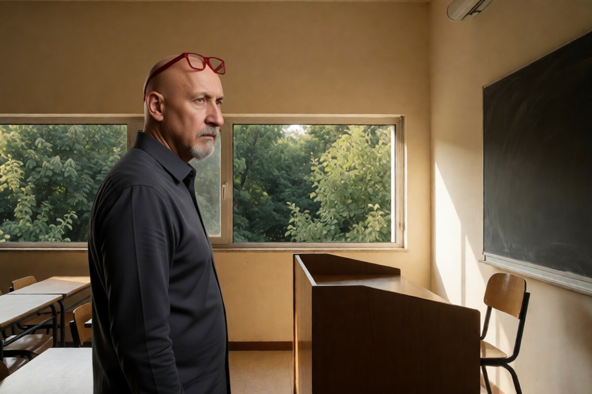

Cronaca · 4 novembre 2026
Famiglia nel bosco, Catherine Birmingham insegnerà a Roma a 60 euro l'ora

La madre della famiglia di Palmoli ha firmato un incarico di collaborazione con un istituto di pedagogia. I tre figli vivono ancora in una casa famiglia, e il cantiere della casa nuova è fermo.
di Franco Zanghì
Catherine Birmingham, la madre della famiglia che viveva in un casolare nei boschi di Palmoli, in provincia di Chieti, ha un incarico di collaborazione con l'Istituto Nazionale di Pedagogia Familiare, a Roma. Porterà la propria testimonianza in un corso di perfezionamento intitolato «intelligenza naturale», per 60 euro lordi l'ora.
Il contratto
Il contratto porta la data del 17 ottobre. Prevede che Birmingham intervenga nel corso per raccontare la propria esperienza e confrontarsi con chi lo frequenta, con compenso corrisposto tramite bonifico.
Contiene anche clausole precise: riservatezza su quanto si dice in aula, tutela delle persone nominate e divieto di registrare senza un'autorizzazione scritta.
Il legale della famiglia, l'ex senatore Simone Pillon, sostiene che non si tratti di un'attività per reperire i fondi della casa, ma di un contributo professionale retribuito poco più di un rimborso spese. E descrive il senso del corso come una contrapposizione fra l'intelligenza naturale e un'intelligenza artificiale fatta, dice, di conformismo e modelli di vita imposti.
Dove sono i bambini
Un anno fa il Tribunale per i minorenni dell'Aquila ha sospeso la responsabilità genitoriale. I servizi sociali avevano scritto che il casolare, privo di corrente elettrica, di acqua corrente e di un bagno, non era adatto alla crescita dei bambini. Da allora i tre figli vivono in una casa famiglia a Vasto: la retta, secondo Open, supera i 7 mila euro al mese e la paga l'ente locale.
I genitori hanno acquistato un terreno nel 2021 e hanno un progetto di casa autosufficiente accanto al vecchio rudere. Il cantiere doveva partire a settembre e, secondo quanto riportato, è fermo in attesa delle risorse. Nel frattempo il Comune di Palmoli ha concesso alla famiglia, in comodato gratuito per un anno, un'abitazione dove stare con i figli, e Pillon ha depositato in tribunale una memoria di 36 pagine per chiedere il rientro dei bambini.
Il punto
Su questa famiglia si è detto tutto e il contrario di tutto: simbolo di libertà per alcuni, capriccio sulla pelle dei figli per altri. Sui fatti, una madre che lavora e guadagna è una notizia buona, non una provocazione, e chi ironizza sul titolo del corso dovrebbe farsi un'altra domanda, cioè quanto costa alla collettività tenere tre bambini in una struttura invece che con i genitori in una casa a norma.
Resta però il punto che il tribunale ha posto, e che un incarico a Roma non scioglie: la casa adatta non c'è ancora. Se la cattedra sia un passo verso il rientro dei bambini o un modo di raccontarsi mentre il cantiere aspetta, lo stabiliranno i giudici sugli atti.
Fonti
- Open, «Famiglia nel bosco, mamma Catherine trova lavoro: insegnerà a Roma per 60 euro l'ora», 31 ottobre 2026
- Tgcom24, «Famiglia nel bosco, Catherine Birmingham trova lavoro come docente a 60 euro l'ora», 31 ottobre 2026
- Il Tempo, «Famiglia nel bosco, Catherine diventa professoressa», 1 novembre 2026
- Orizzonte Scuola, «Famiglia nel bosco, la mamma diventa docente all'Istituto Nazionale di Pedagogia», 1 novembre 2026
- Quotidiano Nazionale, «Mamma Catherine insegnerà a Roma: il lavoro e gli altri passi per riportare i figli a casa», 1 novembre 2026
La retta della casa famiglia e lo stato del cantiere sono dati riportati dalle testate citate, non da atti consultati direttamente. Il procedimento davanti al Tribunale per i minorenni è in corso.